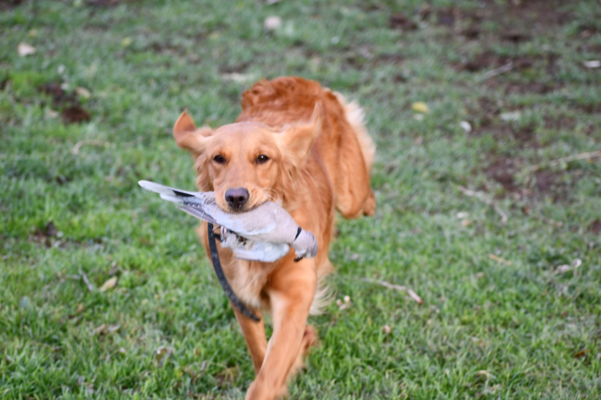
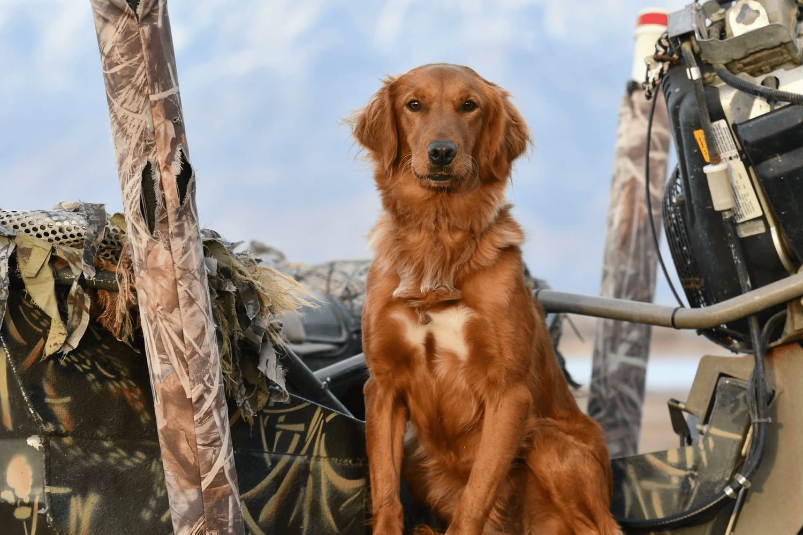
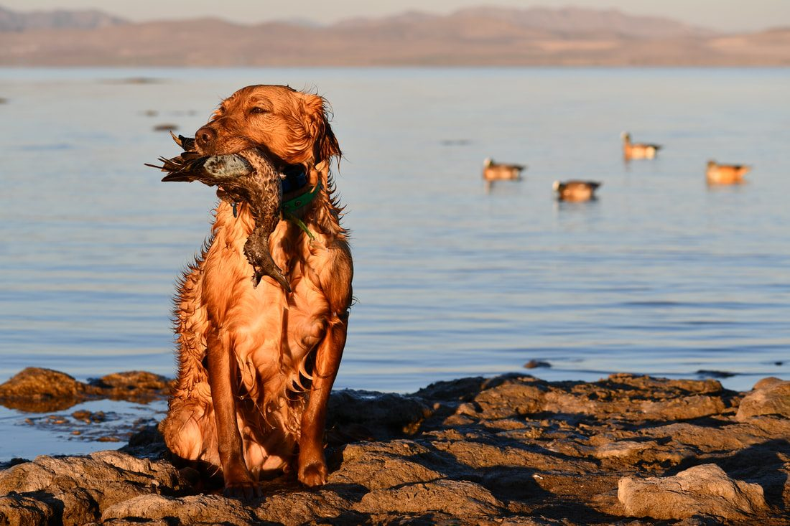
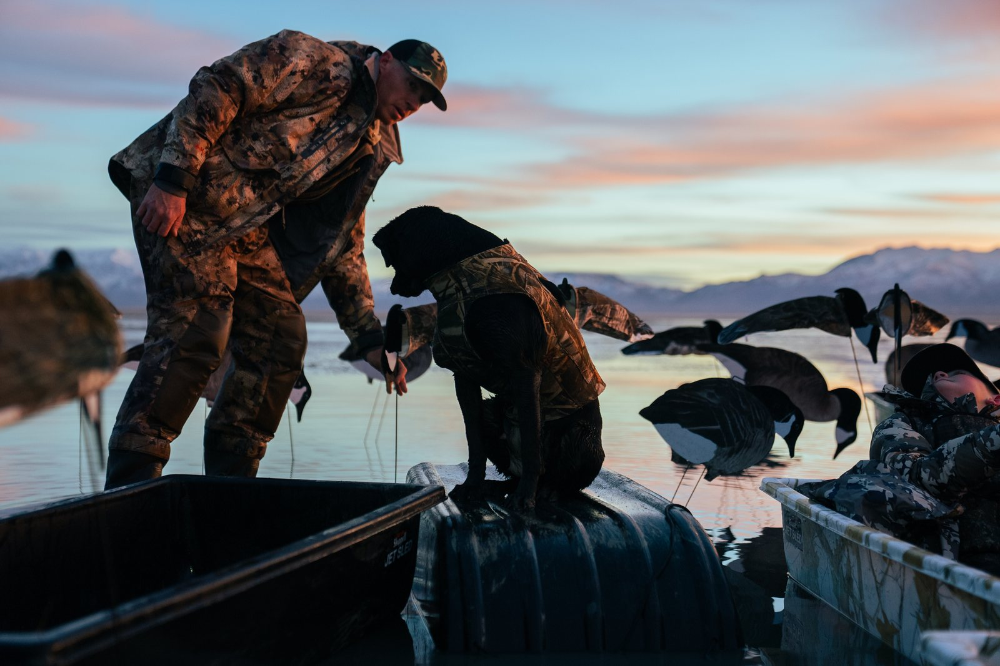

If a dog is already gun shy, the first thing I recommend is stop shooting around the dog and trying to see if it is getting better.
More gunfire is not automatically the answer.
When a dog has learned that a gunshot means something negative, the goal is to slowly change that association.
In my training program, I usually approach that in two ways:
- Build a strong positive experience with birds, retrieving, prey drive, and movement, then gradually introduce live gunfire at a distance.
- If the dog is already severely gun shy or reaches a point where live gunfire causes it to shut down, back up and use a controlled desensitization approach before returning to field work.
If you are still asking whether the dog can come back at all, start with Can a Gun-Shy Dog Be Fixed?
The most important part of both approaches is the same:
Step 1: Stop reinforcing the problem
One of the biggest mistakes people make with a gun-shy dog is continuing to expose it to gunfire because they hope the dog will eventually get used to it.
That might mean:
- Taking the dog back hunting and continuing to shoot around it.
- Firing guns nearby to see whether the dog is still afraid.
- Taking the dog to a shooting range.
- Tying the dog somewhere while people shoot.
- Shooting directly over the dog and hoping repeated exposure will fix the issue.
If the dog is already afraid, this can make the negative association stronger.
A dog that is uncomfortable with gunfire needs a gradual progression, not more uncontrolled exposure.
Before trying to fix the problem, stop adding to it.
Step 2: Find something the dog really enjoys
When possible, I like to begin with something the dog already considers very positive.
For most hunting dogs, that is usually:
- Birds.
- Retrieving.
- Chasing.
- Prey drive.
- Play.
- Movement.
Movement can be especially useful because an active dog has an outlet for stress.
With a retriever, we may start by building excitement for retrieves. With pointing breeds or other bird dogs, I often like to use birds.
One way we do this is with a pigeon that has had its flight feathers removed. We tease the dog with the bird, throw it out, and allow the dog to chase or retrieve it.
At this point, there may be no gunfire at all.
What I want to see first is a dog that is genuinely excited. The dog may retrieve the bird, chase it, mouth it, or become intensely focused on it. The exact behavior can vary.
What matters is that the dog has strong interest and is having a positive experience.

Step 3: Build the positive experience before adding a gun
I do not want to rush straight from showing the dog a bird to firing a shotgun.
We may spend several days simply building bird drive and confidence.
The dog should be showing us:
- Strong interest in the bird.
- Happy, energetic behavior.
- Willingness to chase or retrieve.
- Normal body language.
- Excitement about the activity.
The positive activity comes first. Only after that foundation is established do we begin adding gunfire.

Step 4: Start the gunfire far away
Once the dog is excited and working well, we bring in another person to handle the gun.
The shooter starts far enough away that the shot is barely noticeable to the dog. We also point the gun away from the dog.
The exact starting distance is not the same for every dog. What matters is the dog’s reaction.
The dog should already be thinking about something positive when the shot happens. For example, we may throw the bird and fire the gun near the top of the bird’s arc. The dog’s attention should stay on the bird.
Then we watch what happens.
Step 5: Watch the dog, not the distance
The distance between the dog and the gun is not the most important measurement. The dog’s demeanor is.
After a shot, I want to know:
- Did the dog continue going after the bird?
- Did the dog keep retrieving?
- Did its energy stay the same?
- Did the dog suddenly stop working?
- Did it turn toward the gun and become concerned?
- Did the dog come back to the handler?
- Did it stop ranging out?
- Did its tail, posture, or overall attitude change?
A dog does not have to run away to show a gun issue. Sometimes the change is much more subtle.
The dog may simply stop hunting. It may walk beside the owner instead of ranging out. It may stop retrieving. It may become less energetic.
If the dog’s normal behavior changes in a negative way, that is information. It usually means we need to slow down. I go through those signs more fully in Signs Your Dog Is Becoming Gun Shy.
Step 6: Bring the gun closer only if the dog stays happy
If the dog continues working happily and does not show concern, we can gradually move the shooter closer.
That progression may happen over multiple sessions. There is no set schedule. I do not say: “On day three, move the gun to this distance.” The dog determines when we progress.
If the dog stays happy and driven, we continue. If its demeanor changes, we back up.
The long-term goal is to reach the point where the gun can be fired near or over the dog while the dog continues happily retrieving, chasing birds, or hunting.
At that point, we are trying to establish a strong relationship in the dog’s mind: Birds, hunting, and gunfire all belong together as part of a positive experience.
- 1Positive activity
- 2Distant gunfire
- 3Watch demeanor
- 4Move closer only if the dog stays happy

What if the dog hits a wall?
Some dogs do well until the gun reaches a certain distance. Then they begin shutting down.
I have worked with dogs that were fine while the gun was farther away, but once we reached roughly 30 or 40 yards, the dog could not get past that point.
The dog still had bird drive. It still wanted to work. But the gunfire became more important to the dog than the bird.
When that happens, continuing to move the gun closer usually is not the answer. That is when we may back away from live gunfire completely.
When I use Gunshy Fix
Situations like that are one of the reasons I created Gunshy Fix.
Gunshy Fix uses calming music and gradually introduces gunfire into that soundtrack. Instead of putting the dog immediately into another live-fire training session, we can work on the sound in a much more controlled environment.
The program starts with the first lesson and progresses gradually. The owner can play the lesson while the dog is:
- Relaxing at home.
- Eating.
- Playing.
- Retrieving.
- Spending normal time with the family.
- Participating in another positive activity.
What we’re looking for is the same thing we look for in the field:
No negative change in demeanor.
How to progress through Gunshy Fix
Start with the first lesson at an average, comfortable volume. Then watch the dog.
If the dog continues eating, playing, resting, retrieving, or behaving normally, continue using that lesson until the dog is completely comfortable with it. Then move to the next lesson. Repeat the process.
Do not move forward simply because you have played a track a certain number of times. Move forward because the dog is comfortable.
If the dog’s behavior changes at the next level, go back to the previous lesson. Stay there until the dog is comfortable again. Then try progressing once more.
The final lesson contains gunfire without the calming music. By that point, we want the dog to be able to hear those sounds while continuing its normal activities without showing a negative change in behavior.
Desensitization does not mean overwhelming the dog
There is an important difference between controlled desensitization and simply exposing a dog to loud noises.
If someone takes a gun-shy dog to a shooting range and starts firing repeatedly, they may call that desensitization. That is not the way I approach it.
If the sound begins at a level the dog already considers frightening, we are starting too high. The goal is to begin at a level where the dog is comfortable, then gradually increase the exposure.
If we cross the dog’s threshold and its demeanor changes, we back up.
Step 7: Return to birds and live gunfire
Once a dog has become comfortable with the Gunshy Fix lessons, we can return to field work.
At that point, I like to bring the positive pieces back together:
- Birds.
- Retrieving.
- Movement.
- Prey drive.
- Gunfire at a safe distance.
We again start the gunfire farther away and gradually work it closer. The difference is that the dog has now had additional time to build a more comfortable relationship with the sound.
For some dogs, that can help us break through the threshold we were unable to get past before.
How long does it take?
There is no exact timeline.
If a dog has average to above-average prey drive and we are working it consistently, we can sometimes get the dog going pretty well around gunfire in about a month. In our training program, those dogs may be worked Monday through Friday. That is a lot of repetition and consistency.
Dogs with lower drive or much more severe gun issues can take several months. Some dogs will progress faster. Others will require much more patience.
The biggest mistake is trying to make the dog fit a schedule. Watch the dog. I cover timelines more fully in How Long Does It Take to Fix a Gun-Shy Dog?
Don’t rush because hunting season is coming
One reason owners move too quickly is because they have a deadline. Opening day is approaching. A hunting trip is already planned. The dog is supposed to be ready.
The problem is that the dog’s brain does not care about the hunting calendar. If the dog is telling you it is uncomfortable, moving faster because you want to hunt can cause a setback.
A slow approach now may save you months of trying to repair another bad experience later.
What happens after the dog improves?
Even after a dog is doing well around gunfire, I recommend continuing positive exposure. Dogs can relapse.
If a dog has worked through gunfire successfully, I would not put the gun away for six months and then suddenly take the dog hunting and begin shooting directly over it.
Continue layering positive gunfire experiences into the dog’s life. Take the dog out regularly. Keep those experiences controlled and positive. Keep watching the dog’s demeanor.
Over time, the goal is to make the positive association with gunfire more established.
When should you get a professional trainer involved?
A lot of owners can begin the process at home. Finishing the process with live gunfire may be more difficult.
A proper field setup may require:
- Birds.
- Training property.
- A safe and legal place to shoot.
- A person working with the dog.
- Another person operating the gun at a distance.
- The ability to move the shooter gradually.
- Experience reading subtle changes in the dog’s behavior.
Many owners simply do not have access to all of those things.
If a dog has already developed severe gun issues, I often recommend starting with Gunshy Fix at home. Once the dog is comfortable with the sound progression, a professional trainer can help with the transition back to birds and live gunfire. When that setup is the limiting factor, see When a Gun-Shy Dog Needs Professional Training.
Can you guarantee a gun-shy dog will be fixed?
No.
I don’t guarantee owners that every dog will completely overcome gun shyness.
What I can say is that we use everything in our training experience and knowledge base to give the dog the best opportunity we can.
Dogs with decent retrieving or bird drive often give us something positive to build from. But some cases are much harder than others.
The owner needs to be patient. The dog needs to determine the pace. And the goal should always be progress, not forcing the dog through gunfire just because we want a fast result.
The simple rule I keep coming back to
When working with a gun-shy dog, watch the dog’s demeanor.
If the dog is:
- Happy.
- Retrieving.
- Chasing.
- Hunting.
- Eating.
- Playing.
- Acting like itself.
you may be able to continue gradually.
If the dog:
- Shuts down.
- Loses interest.
- Stops retrieving.
- Stops hunting.
- Comes back to the handler.
- Becomes unusually quiet.
- Starts focusing on the gun instead of the positive activity.
you have probably moved too quickly.
Back up before you move forward again.
That rule applies whether we’re working with live gunfire in the field or recorded gunfire at home.
Start with a controlled approach
Gunshy Fix was created to give owners a controlled way to begin working on the sound of gunfire at home before attempting live field work.
The lessons combine calming music with progressively introduced gunfire and allow the dog to move through the program based on its own comfort level.
For dogs that have already developed a negative association with gunfire, it can be a practical first step before returning to birds and live shooting.